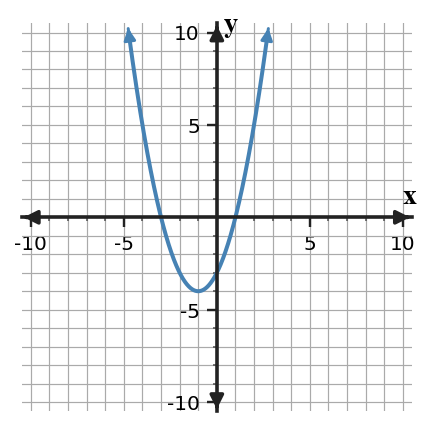

Start with what you can solve independently. Then find different classmates to compare reasoning or help with problems you have not completed. Record your own work and have each partner initial one problem they discussed with you.
Use the graph to identify the vertex and decide whether it is a maximum or minimum.

Rewrite $y=2(x-1)(x-5)$ in standard form and use the factored form to identify the zeros.
Construct a strategy for choosing among standard, vertex, and factored form when a problem asks for y-intercept, zeros, or vertex. Test your strategy on $y=x^2-4x-5$.
Design a short context where the zeros and vertex of a quadratic both have meaning. Give the model in two equivalent forms and explain which form answers each contextual question best.
What point is most often easiest to use as a test point when it is not on the boundary?
Does the boundary line belong to the solution set for a strict inequality such as $y\lt x+1$?
Does the boundary line belong to the solution set for $y\ge -3x+2$?
A snack pack must have at least 3 fruit items and at most 10 total items. Let $f$ be fruit items and $c$ be crackers. Write a system of inequalities.
A club can spend at most \$120 on notebooks and pens. Notebooks cost \$4 and pens cost \$2. Let $n$ be notebooks and $p$ be pens. Write a cost inequality and two nonnegative constraints.
Graph the system, then decide whether $(4,2)$ is in the solution region.

A student graphs $y\lt -x+4$ using a solid boundary and shading above the line.

Critique the graph. Name both decisions that must be checked and state how to revise the graph.
Create a system of two linear equations that has solution $(4,3)$ and is efficient to solve by substitution because one equation is already solved for $y$.
- Write the system.
- Show a substitution solution path.
- Explain why your structure makes substitution efficient.
In $3x^2-5x+7$, identify the quadratic term, linear term, and constant term.
Compare the parent and transformed quadratic. List the reflection, vertical scale factor, and translation shown.

Construct a strategy for choosing between factored form, vertex form, and expanded form when answering questions about zeros, maximum or minimum, and initial value.
A translated graph and equation disagree: the graph has vertex $(4,1)$, but the equation is $y=(x+1)^2+4$. Revise one representation and justify your revision.